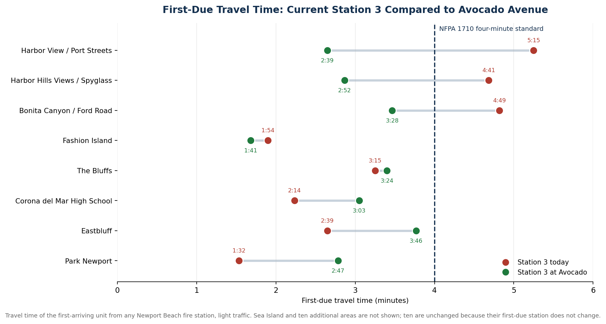
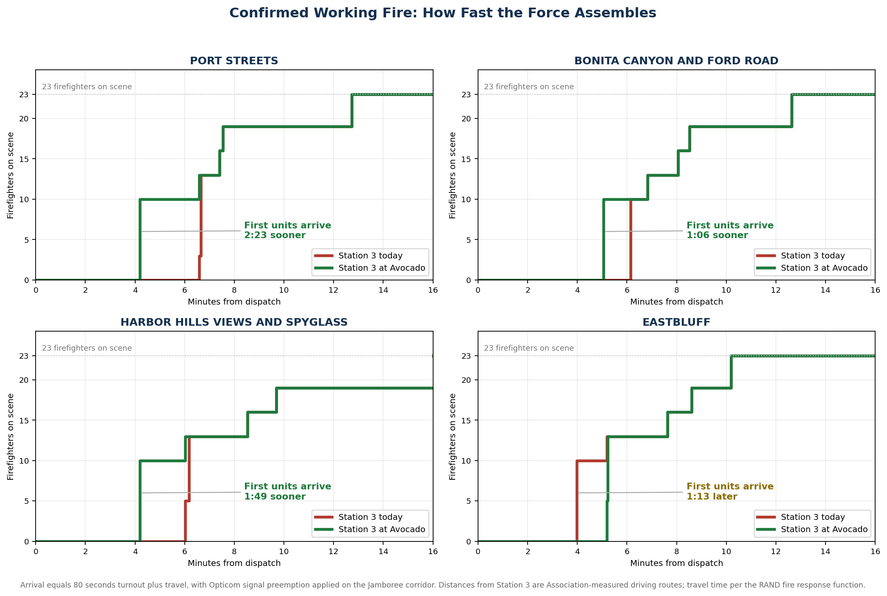

Moving Station 3 to the Newport Transportation Center site brings the neighborhoods with the city's slowest fire and medical response inside the national four-minute standard, using the crews and apparatus Newport Beach already has. Newport Beach firefighters support this relocation.
Newport Beach firefighters work every day to deliver excellent service, save lives, and protect property. We also work to be good stewards of the public money that pays for it. Nothing determines whether we reach you in time more than where our stations sit, and station placement is a long-term decision the city lives with for decades.
In 2022, the city commissioned a Standards of Coverage study of the fire department [1]. It documented what firefighters already knew: travel times to the Port Streets, the Harbor Hills Views and Spyglass area, and the Bonita Canyon and Ford Road corridor exceed the four-minute national standard [7]. Today the first fire unit reaches the Port Streets in an estimated 5 minutes 15 seconds of travel, 31 percent past the national standard, the Harbor Hills Views and Spyglass area in 4 minutes 41 seconds, 17 percent past it, and the Bonita Canyon and Ford Road corridor in 4 minutes 49 seconds, 20 percent past it. Those are the minutes in which a room fire flashes over and a cardiac arrest becomes unsurvivable.
The study's remedy was to build two additional fire stations. Four years later the city controls no site for it, no funding has been programmed for land, construction, or the twelve to fifteen new firefighters each new station would require in perpetuity, and population growth and heavier traffic have made the 2022 gap wider, not narrower. Building and staffing two additional stations is not a viable plan for our city today.
Serving the most people well with the resources the city already has is a plan, and it is the one the firefighters of Newport Beach fully support.
The proposal relocates Fire Station 3 from Santa Barbara Drive to the Newport Transportation Center site at 1550 Avocado Avenue, and relocates the transportation center to a full replacement facility through a process the City and the Orange County Transportation Authority govern together.
This is not one official's idea. It is a matter of public safety and long-term investment that the City Council and the firefighters who staff the station fully support, so that we can deliver rapid response and save lives in your time of need. The Newport Beach Firefighters Association supports this relocation because the data supports it.
City-commissioned Standards of Coverage study documents the travel time deficiencies in the city's southeastern neighborhoods [1].
City Council votes 6-0 to request OCTA's support for relocating Station 3 to 1550 Avocado Avenue [2].
OCTA contracts with HDR Engineering for a relocation feasibility study of the transportation center [4].
OCTA and the City execute a term sheet under the cooperative agreement governing the potential relocation [5].
City Council votes 7-0 to initiate a memorandum of understanding with OCTA [6].
There is broad support for examining the relocation of the OCTA transportation center, including the Orange County Board of Supervisors, the Newport Beach City Council, the Teamsters union representing the transit workers, and the Newport Beach Firefighters Association [10]. All of them see the same value: a new transit facility for riders, preservation of transit function, Federal Transit Administration requirements met or exceeded, and a fire station placed where firefighters can finally meet the national response standard for neighborhoods that are critically underserved today [3].
Toggle between the current and proposed Station 3 locations. Each marker shows the estimated travel time of the first-arriving unit from any Newport Beach fire station: green meets the four-minute national standard, yellow is 4:01 to 4:29, red is 4:30 or longer. Select any marker for the before-and-after figures.
Travel time of the first-arriving unit from any station, light traffic. Driving distances to the affected areas are Association-measured routes; see Methodology.
Newport Beach cannot afford to add a new fire station on every block, and the firefighters of this city are not asking it to. Together, we can take this opportunity to place our next investment in a location that reaches the most people the fastest. That is what this relocation does, and it is why firefighters consider this a true public safety investment.
Coverage should not depend on which side of the city you happen to live on. Right now the Port Streets wait more than five minutes for a first unit while other neighborhoods see one in under two. Relocating Station 3 closes that spread without taking protection away from anyone: no neighborhood loses its first-due station, no area falls outside the standard, and the citywide worst case drops from 5:15 to 3:46. Every household in Newport Beach ends up on the right side of the four-minute line.
That is the most honest definition of good stewardship we know.
Three areas of Newport Beach are outside the national four-minute standard today. Under the relocation, every area of the city meets it. That is the whole case, and it is why Newport Beach firefighters support the move.
Ten areas across the city are entirely unaffected, because their first-due station does not change: the Peninsula, Balboa Island, Balboa Pier, Lido Isle, Corona del Mar, Newport Heights, Westcliff and Dover Shores, Santa Ana Heights, Newport Ridge, and Cypress at Pacific Ridge. Several neighborhoods close to the current station give back time while remaining inside the standard: Eastbluff moves from 2:39 to 3:46 and Park Newport from 1:32 to 2:47. Those changes are measured in seconds. The gains in the underserved corridors are measured in minutes.
| Area | Today | Standard | Proposed | Standard | Change |
|---|
First-due travel time, light traffic, first-arriving unit from any station, with Opticom signal preemption applied on the Jamboree corridor. A down arrow marks an area where response improves by 20 seconds or more. Total response from dispatch adds 60 to 80 seconds of turnout. Standard refers to the NFPA 1710 four-minute first-due travel objective. Times under one minute are shown as under 1:00.


The record shows otherwise.The June 2025 request to OCTA passed the City Council 6-0. The July 2026 direction to begin a memorandum of understanding passed 7-0. The firefighters who staff Station 3 support the move. Recorded unanimous votes are the action of a council, not a person.
The study made no finding on this site.Its models held all eight stations fixed; relocating any station was outside its scope, and the Avocado Avenue site was never evaluated. The same study documented the very travel time deficiencies the relocation fixes. The absence of a recommendation from a study that never examined the site is not a recommendation against it.
Every area of the city meets the national standard under the relocation, including Eastbluff.On measured driving routes with the city's existing signal preemption, Eastbluff moves from 2:39 to 3:46 and Corona del Mar High School from 2:14 to 3:03, both inside the four-minute standard. In exchange the Port Streets gain 2 minutes 36 seconds, the Harbor Hills Views and Spyglass area gains 1 minute 49 seconds, and the Bonita Canyon and Ford Road corridor gains 1 minute 21 seconds, all moving from outside the standard to inside it. Three areas fail the standard today. None does under the relocation. That is why the firefighters who staff these companies support the move.
The recorded basis is response coverage.The Newport Beach Firefighters Association supports moves that improve public safety, and this move improves public safety; that is why the Association supports it. Unanimous public votes, taken on fire response data, are the documented record. Handwritten staff notes recording exploratory options are not adopted policy, not a plan, and not a council action. No disposition of the Santa Barbara Drive property has been approved, negotiated, or brought to council, and this analysis assumes none.
OCTA signed the process.A cooperative agreement and term sheet govern a jointly overseen relocation feasibility study, with federal requirements and grantor concurrence as express conditions and a replacement facility as the premise. The City funds the study, as the initiating party should. That is a governed process, not opposition.
A replacement facility is a condition, not a hope.The feasibility process exists to ensure riders are served as well or better, with Federal Transit Administration requirements as a hard gate, and the union representing the transit workers is among those supporting examination of the relocation.
Newport Beach firefighters are asking for your support and your voice to the City Council in a meaningful, data-driven, fact-based discussion about the necessary and critical relocation of Fire Station 3.
Please leave your comments below to be shared with the Newport Beach City Council as we continue to provide fact-based information on how we can work together keeping Newport safe.
Engines are staffed with three personnel: a company officer, an engineer, and a firefighter paramedic. Trucks are staffed with four: a company officer, an engineer, a tiller operator, and a firefighter paramedic. Ambulances carry two firefighter paramedics. The response grows with the emergency.
A confirmed working fire draws apparatus from across the city. Station 3 houses one of only two truck companies in Newport Beach and one of only four ambulances, so its position determines ladder and transport coverage for the eastern half of the city. Personnel counts reflect NBFD-assigned units only; major incidents may also draw mutual and automatic aid from neighboring departments.
| Station | Location | Frontline units |
|---|---|---|
| 1 | 110 E. Balboa Blvd (Balboa Peninsula) | Engine |
| 2 | 2807 Newport Blvd (Lido) | Engine, Truck, Ambulance |
| 3 | 868 Santa Barbara Dr (Newport Center) | Engine, Truck, Ambulance |
| 4 | 124 Marine Ave (Balboa Island) | Engine |
| 5 | 410 Marigold Ave (Corona del Mar) | Engine, Ambulance |
| 6 | 1348 Irvine Ave (Mariners) | Engine |
| 7 | 20401 Acacia St (Santa Ana Heights) | Engine, Ambulance |
| 8 | 6502 Ridge Park Rd (Newport Coast) | Engine |
Speed matters because outcomes are decided in minutes. Fireground research by the National Institute of Standards and Technology shows that how quickly an effective force assembles determines how quickly search, rescue, and fire attack are completed [8]. Survival from out-of-hospital cardiac arrest falls roughly 7 to 10 percent for every minute without intervention [9].
First-due figures reflect the first-arriving unit from any Newport Beach fire station. Driving distances from both Station 3 locations to every affected area are measured commercial-mapping routes verified by the Association. Distance converts to travel time using the RAND fire response function, travel time in minutes equals 0.65 plus 1.7 times distance in miles, a standard planning relationship in fire deployment analysis [12]. All figures are light-traffic estimates. The measured figures are consistent with the approximate distances published in the June 10, 2025 City staff report [2].
Preemption and emergency lights and sirens are modeled as a modest 20 percent travel-time reduction applied to the share of each route that runs on the Jamboree corridor [13].
The proposed station is sited on the Newport Transportation Center parcel at 33.61518 N, 117.86764 W. Distances to that point are the measured driving routes adjusted for its position on the parcel, an adjustment smaller than the precision of the measured routes themselves. Apparatus egress geometry, apron and driveway design, turning radius, and signal placement at the station exit are determined during station design and are assumed here to be built to current fire service standards.
Prior to drawing conclusions from this analysis, the following should be taken into consideration:
Educational use and limitations. This analysis is provided for educational and informational purposes only. It is not a guarantee of response.
The figures in this report are not drawn from Newport Beach Fire Department computer-aided dispatch records. They are built from publicly available GIS and mapping systems, including current traffic-aware routing, combined with the RAND fire response travel-time model and the turnout times published in NFPA 1710, in order to produce reasonable and defensible planning estimates of travel and response time.
Actual response times may vary. Crew status, system status, apparatus placement, concurrent incidents, traffic, weather, and other conditions outside the scope of this report all affect how quickly help arrives. Nothing here should be relied upon as a commitment or prediction of the response to any particular emergency. In an emergency, dial 911.
The intent of this report is to present a clear, factual, and meaningful analysis showing that relocating Fire Station 3 from its current location to the transit center site will help Newport Beach firefighters save lives, protect property, and improve the quality of public safety across Newport Beach.